15.1 Introduction
This section provides a detailed description of the product architecture for commodity derivatives. FpML provides support for commodity swaps (whether fix/float or float/float) and commodity options (American, European and Asian). Physically-settled trades are also covered including swaps for Electricity, Natural Gas, Oil, and Coal commodities. Support for Bullion Forwards is also included. A representation for a commodity underlyer has also been introduced, which is used within the commodity products but that can also be used within other products such as equity baskets.
For an overview of the commodites coverage in FpML and its linking with the legal documentation see the following document: FpML Commodities Coverage Matrix (pdf file)
The 'commodity' underlyer is meant to identify the commodity ‘index’ which is subject to the trade and is flexible enough to support agricultural products, and energy. Support for other commodity types has not been fully evaluated but this does not preclude their being able to be represented A number of global elements are already defined in the FpML schema for various asset types. The commodity underlyer follows the same model.
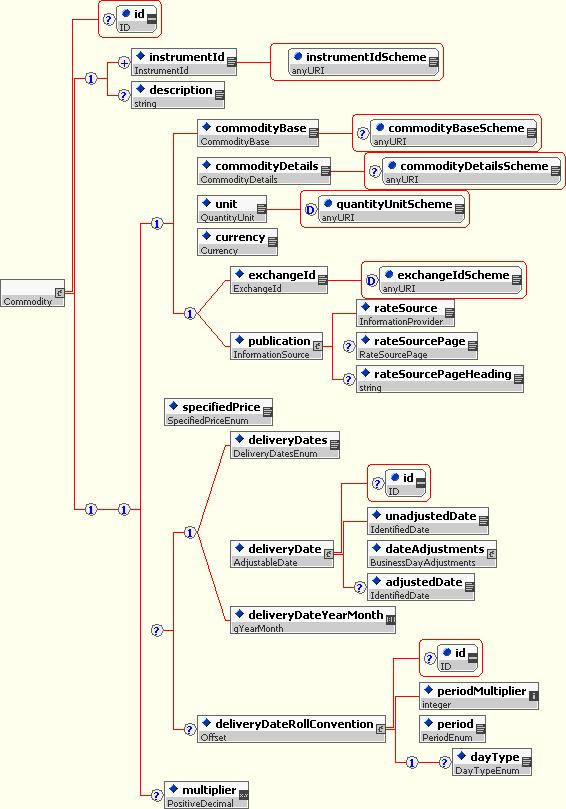{kind=link}
The 'instrumentId' and the 'description' elements are derived from the IdentifiedAsset type, which is used by multiple underlyers. The 'instrumentId' contains the unique identifier for the asset, and is intended to hold a Commodity Reference Price in the format set out by ISDA in the 1993 or 2005 Commodity Definitions. However, a CUSIP, ISIN, or any other identifier could also be used. The 'description' contains the name of the asset.
The following sequence of elements is optional and they are specified only in the event that no ISDA Commodity Reference Price or other identifier for this commodity ‘index’ exists.
- The 'commodityBase' element identifies the base type of the commodity being traded, for example 'Oil'.
- The 'commodityDetails' also identifies the type of commodity but it is more specific than the base, for example 'Brent'.
- The 'unit' element identifies the unit in which the underlyer is denominated.
- The 'currency' identifies the currency in which the Commodity Reference Price is published.
- Either the 'exchange' or the 'publication' are specified. For those commodities being traded with reference to the price of a listed future, the exchange where that future is listed should be specified in the 'exchange' element. On the other hand, for those commodities being traded with reference to a price distributed by a publication, that publication should be specified in the 'publication' element.
The 'specified Price' is not defined in the Commodity Reference Price and so needs to be stated in the underlyer definition as it will impact the calculation of the Floating Price.
The 'deliveryDates' element is applicable for a Commodity Transaction that references a listed future.
The 'deliveryDateRollConvention' specifies, for a Commodity Transaction that references a listed future via the 'deliveryDates' element, the day on which the specified future will roll to the next nearby month when the referenced future expires.
The 'multiplier' specifies the multiplier associated with the transaction. This element is intended for use with freight transactions.
The commodity swap product is designed to support both fixed/float swaps and float/float swaps. There is also support for describing the attributes of physical commodity delivery. Its design is fully compatible with other FpML products and reuses standard common types.
As with all products in FpML the commodity swaps are accessed through a global element 'commoditySwap' which can substitute the 'product' element used in the construction of trade structures. The following diagram outlines the product structure.
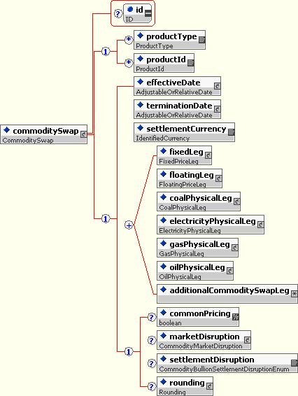{kind=link}
The 'commoditySwap' structure only defines parameters for product-related information (e.g. dates, rates, underlying commodity, price source, etc.). Other trade-related information (e.g. trade date, identifiers, legal documentation, etc.) is held in the containing trade structure.
The repeating 'fixedLeg' and 'floatingLeg' elements contain the details of any scheduled payments or exchanges during the life of the instrument and are described later. A simple commodity swap would contain two legs, typically one fixed and one floating, but the repetition allows more complex multi-legged exchanges to be described.
The product representation of physically-settled trades is done within 'coalPhysicalLeg', 'elecricityPhysicalLeg', 'gasPhysicalLeg', 'oilPhysicalLeg' paired with 'fixedLeg' or 'floatingLeg' - see details in the Physical Leg section.
The optional 'commonPricing' flag may be relevant for a Transaction that references more than one Commodity Reference Price. If Common Pricing is not specified or its value is set to 'false', it will be deemed not to apply.
The optional 'marketDisruption' structure defines how the product should behave if there is a market disruption as defined in the 'ISDA 1993 Commodity Definitions' or in the 'ISDA 2005 Commodity Definitions', as applicable.
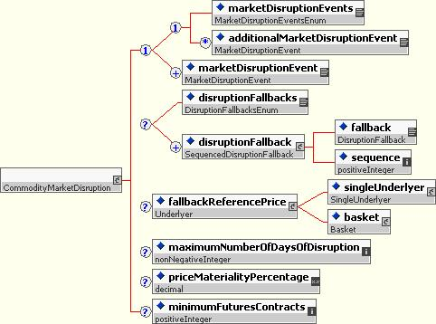{kind=link}
The commodity swap's 'rounding' element, if present, defines the direction and number of decimal places to which rounding should be performed in all amount calculations.
15.3.1 fixedLeg
A schedule of fixed payments associated with a commodity swap are defined within a 'fixedLeg' using the following structure.
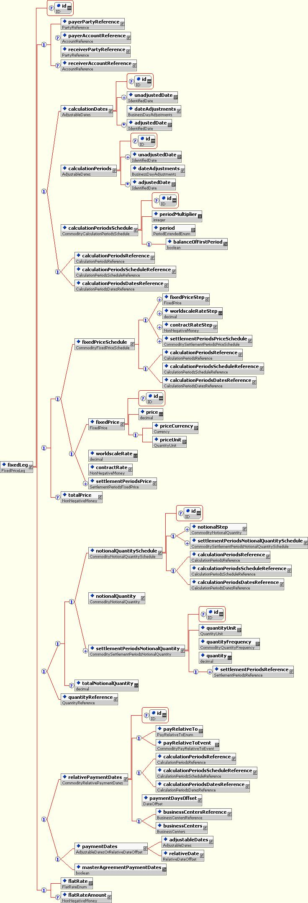{kind=link}
As with other FpML leg structures the payer and receiver parties are explicitly indicated in the 'payerPartyReference' and 'receiverPartyReference'.
The role of the remaining elements is as follows:
- The 'calculationPeriods' or 'calculationDates' if the Calculation Periods are all one day long or the 'calculationPeriodsSchedule' is only intended to be used if the Calculation Periods differ on each leg. If Calculation Periods mirror another leg, then the 'calculationPeriodsReference' element should be used to point to the Calculation Periods on that leg or 'calculationPeriodsDatesReference' element should be used to point to the single-day-duration Calculation Periods on that leg or the 'calculationPeriodsScheduleReference' can be used to point to the Calculation Periods Schedule for that leg.
- The 'fixedPrice' structure defines the price for a given unit of the underlying commodity where that price is fixed for the life of the trade.
- On the other hand, if the fixed price varies over the life of the trade, then the 'fixedPriceSchedule' structure is used instead of the 'fixedPrice'. Note that the intention is that a fixed price step should be specified for each Calculation Period in the trade, regardless of whether there is a change in value between two periods. This is so as to match the fixed price schedule to the calculation periods as clearly as possible. The fixed price steps must be in chronological order (i.e the first step corresponds to the first Calculation Period, the last step to the last Calculation Period).
- The 'totalPrice' structure specifies the total amount of all fixed payments due during the term of the trade.
- The notional amount is specified stating either the 'notionalQuantity' or if the notional changes over the life of the transaction, then the 'notionalQuantitySchedule' is specified. The 'settlementPeriodsNotionalQuantity' should be specified for an electricity transaction, the Notional Quantity for a one or more groups of Settlement Periods to which the Notional Quantity is based. If the schedule differs for different groups of Settlement Periods, this element should be repeated. In addition, the 'totalNotionalQuantity' must be specified. Note that the intention is that a notional step should be specified for each Calculation Period in the trade, regardless of whether there is a change in value between two periods. This is so as to match the notional quantity schedule to the calculation periods as clearly as possible. The notional steps must be in chronological order (i.e the first step corresponds to the first Calculation Period, the last step to the last Calculation Period). If notional amount mirror another leg, then the 'quantityReference' element should be used to point to the Notional Quantity.
- The 'paymentDates' structure supports either the definition of dates as either a series of unadjusted dates along with a date roll convention and business center list for adjustment, or as set of adjusted dates relative to some other date schedule defined elsewhere in the product (e.g. in the floating leg).
- The 'relativePaymentDates' are specified when the payment dates are relative to the calculation periods.
- The Flat Rate, applicable to Wet Voyager Charter Freight Swaps. Whether the Flat Rate is the New Worldwide Tanker Nominal Freight Scale for the Freight Index Route taken at the Trade Date of the transaction or taken on each Pricing Date. The 'flatRateAmount', If 'flatRate' is set to 'Fixed', is the actual value of the Flat Rate.
15.3.2 floatingLeg
Each 'floatingLeg' defines a series of financial payments for a commodity who's value is derived from a floating price source such as an exchange.
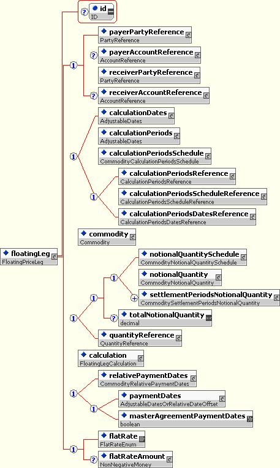{kind=link}
As with the 'fixedLeg' they parties obligation to pay and receive the payments are explicitly indicated by the 'payerPartyReference' and 'receiverPartyReference' elements.
Two structures distinguish the 'floatingLeg' from the 'fixedLeg': the existence of the 'commodity' underlyer (see description above at the Commodity Underlyer section) and the 'calculation' structure within the floating leg.
15.3.2.1 calculation
The 'calculation' structure captures details relevant to the calculation of the floating price.

The structure is defined by the following elements:
- The 'pricingDates' represent the dates on which prices are observed for the underlyer.
- The 'averagingMethod' element specifies the method of averaging specified by the parties when more than one pricing date is applicable.
- If the Notional Quantity is specified in a unit that does not match the unit in which the Commodity Reference Price is quoted, the scaling or conversion factor used to convert the Commodity Reference Price unit into the Notional Quantity unit should be stated in the 'conversionFactor' element. If there is no conversion, the 'conversionFactor' element is not intended to be used.
- The 'rounding' structure defines the rounding direction and precision for price values.
- In some trades, there may be a spread under or over the Commodity Reference Price, in that case the spread may defined by the 'spread' element or if the spread is not constant over the life of the trade, the 'spreadStep' will be used to define the spread schedule. Note that the intention is that a spread step should be specified for each Calculation Period in the trade, regardless of whether there is a change in value between two periods. This is so as to match the spread schedule to the calculation periods as clearly as possible. The spread steps must be in chronological order (i.e the first step corresponds to the first Calculation Period, the last step to the last Calculation Period).
- The FX observations to be used to convert the observed Commodity Reference Price to the Settlement Currency are covered by the 'fx' element.
15.3.3 Physical Leg
15.3.3.1 Coverage
The support for physically-settled commodities trades includes,
- Natural Gas
- Oil
- Electricity
- Coal
15.3.3.2 Product Representation
The product representation of physically-settled trades is done within the commoditySwap product element by adding a family of physical legs.
- Fixed price transaction = xxxPhysicalLeg + fixedLeg
- Floating price transaction = xxxPhysicalLeg + floatingLeg
Note: xxx gets replaced by oil, gas, electricity, and coal.
The following structures vary between all these commodities,
- Delivery periods
- Product
- Delivery
- Quantities
15.3.3.2.1 Gas Physical Leg
Physically settled natural gas leg.
{kind=link}
{kind=link}
{kind=link}
{kind=link}
15.3.3.2.2 Oil Physical Leg
Physically settled oil or refined products leg.
{kind=link}
{kind=link}
{kind=link}
{kind=link}
15.3.3.2.3 Electricity Physical Leg
Physically settled electricity leg.
{kind=link}
{kind=link}
{kind=link}
{kind=link}
{kind=link}
{kind=link}
{kind=link}
{kind=link}
The product support for financially-settled and physically-settled commodity options in FpML is based on the creation of a new 'commodityOption' product. The product references the 'commodity' underlyer in order to support the underlying asset of the option.
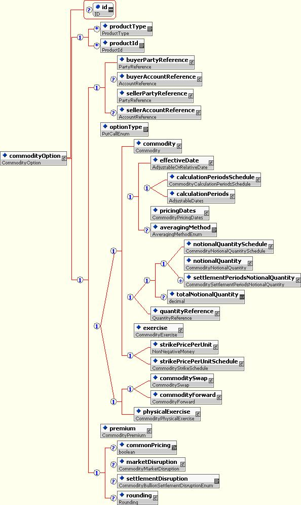{kind=link}
All FpML products inherit two optional elements from the Product type: 'productType' and 'productId'. The 'productType' defines a classification of the type of product. FpML defines a simple product categorization using a coding scheme. The 'productId' contains a product reference identifier allocated by a party. In this case, FpML does not define the domain values associated with this element.
The 'buyerPartyReference' and 'sellerPartyReference' contain references to the parties that buy or sell the instrument respectively. Buying the instrument means paying for the instrument and receiving the rights defined by it. On the other hand, selling the instrument means granting the rights defined by the instrument and in return receiving a payment for it.
The optionType element is for specifying whether this is a call option or a put option.
The choice allows to selecet the financially-settled commodity options or physically-settled options.
The 'premium' element defines the option premium payable by the buyer to the seller. Should the premium differ over the course of an Asian options life (e.g. because delivery is per calendar day which is reflected in the premium), a premium schedule should be specified. Note that the intention is that a premium step should be specified for each Calculation Period in the trade, regardless of whether there is a change in value between two periods. This is so as to match the premium schedule to the calculation periods as clearly as possible. The premium steps must be in chronological order (i.e the first step corresponds to the first Calculation Period, the last step to the last Calculation Period).
The 'commonPricing', 'marketDisruption', and 'rounding' elements are common across all commodity transactions. For a detailed description of them see the commoditySwap section.
15.4.1 CommodityFinancialOption
The CommodityFinancialOption.model is specific to financially-settled commodity options:
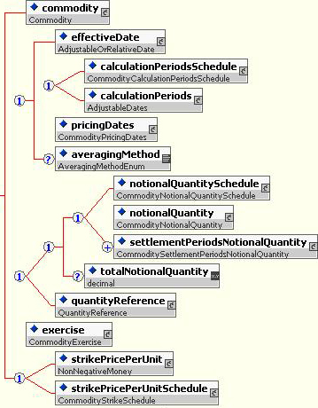{kind=link}
The 'commodity' underlyer component is specified using a reference to the 'commodity' asset (see description above at the Commodity Underlyer section).
The following elements are specific to asian/averaging commodity options only:
- The 'effectiveDate' of the Commodity Option Transaction. Note that the Termination/Expiration Date should be specified in expirationDate within the CommodityAmericanExercise type or the CommodityEuropeanExercise type, as applicable.
- The Calculation Periods are represented explicitly with the 'calculationPeriods' element or as a parametric representation with the 'calculationPeriodsSchedule' structure.
- The 'pricingDates' element defines the dates on which the option will price.
- The 'averagingMethod' is present if there is more than one 'pricingDates' element.
As with the 'commoditySwap', the notional amount of the 'commodityOption' is specified stating either the 'notionalQuantity' or if the notional changes over the life of the transaction, then the 'notionalQuantitySchedule' is specified. In addition, the 'totalNotionalQuantity' must be specified. Note that the intention is that a notional step should be specified for each Calculation Period in the trade, regardless of whether there is a change in value between two periods. This is so as to match the notional quantity schedule to the calculation periods as clearly as possible. The notional steps must be in chronological order (i.e the first step corresponds to the first Calculation Period, the last step to the last Calculation Period).
The 'exercise' structure contains the parameters for defining how the commodity option can be exercised and how it is settled.
The different options for specifying the strike price per unit will consist of a single strike price of a strike price schedule. Note that the intention is that a strike price per unit step should be specified for each Calculation Period in the trade, regardless of whether there is a change in value between two periods. This is so as to match the strike price schedule to the calculation periods as clearly as possible. The strike price per unit of the strike price per unit steps must be in chronological order (i.e the first step corresponds to the first Calculation Period, the last step to the last Calculation Period).
15.4.2 CommodityPhysicalOption
The CommodityPhysicalOption.model is specific to physically-settled commodity options:
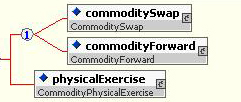{kind=link}
The approach is similar to that used for interest rate swaptions by embedding a physically-settled swap/forward transaction within the option transaction. So that the exercise of an option results in a new physically-settled swap or forward transaction.
The 'physicalExercise' structure defines how the commodity option can be exercised into a physical transaction.
The commodityForward product element supports the representation of Bullion Forwards. Whilst some commodity forwards are booked as single period swaps, precious forwards are extremely basic trades and are confirmed under a different ISDA confirmation template
Even though the initial scope is limited to Bullion Forward, the intention of the working group is to allow support for other commodity classes should this be required.
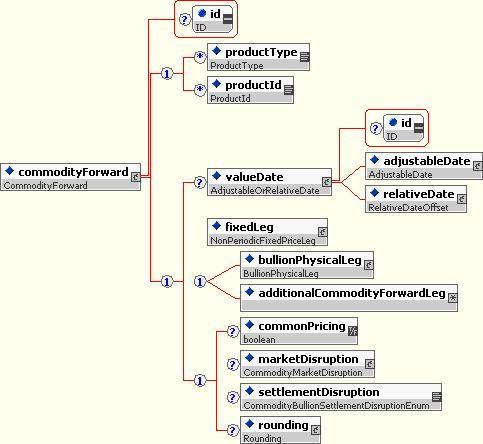{kind=link}
15.5.1 fixedLeg
The fixed payment of the Commodity Forward product is represented using the fixedLeg element of type NonPeriodicFixedPriceLeg.
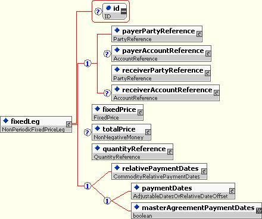{kind=link}
15.5.2 bullionPhysicalLeg
The intention of the new leg is to re-use as many existing commodity components as possible to achieve a flexible implementation of a forward that will be adaptable for use with further commodity classes.
Consequently, the BullionPhysicalLeg component will be a member of a choice group such that further commodity types can be added over time.
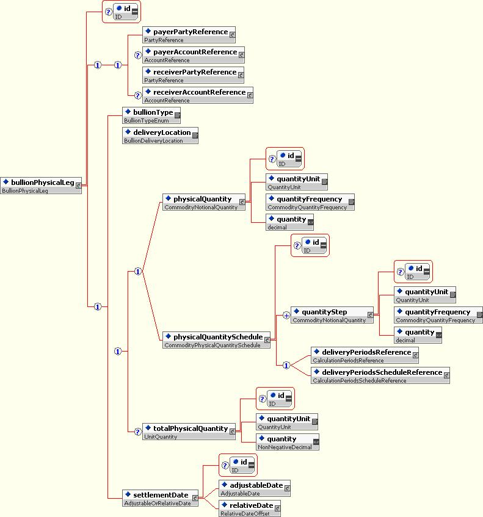{kind=link}